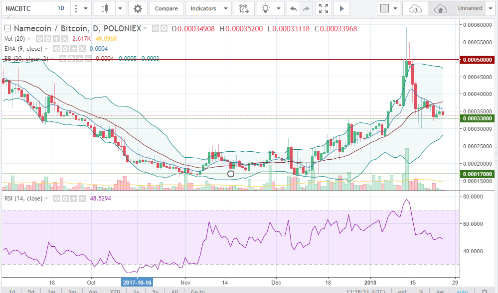

Namecoin
был выпущен в середине апреля 2011 года по исходному коду Биткоина, который подвергся незначительным изменениям.
Максимальный лимит монет составляет 21 млн. штук. Цена NMC демонстрирует относительную стабильность на уровне 30—50 центов за один Неймкойн.
Исключение составил июль 2014 года, когда цена электронной наличности NMC подскочила до 10 долларов.

Назад